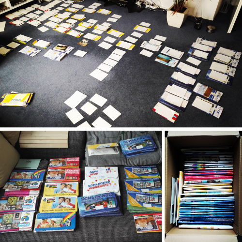
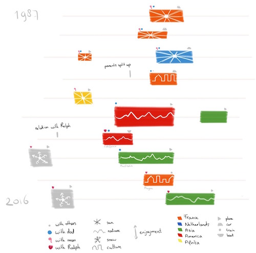
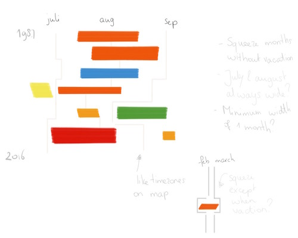
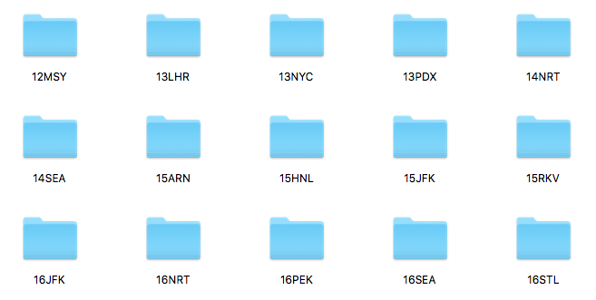
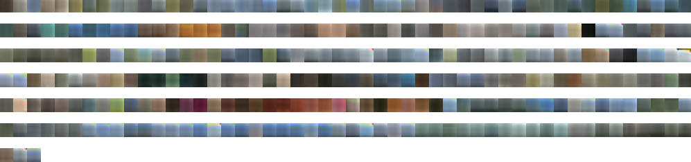
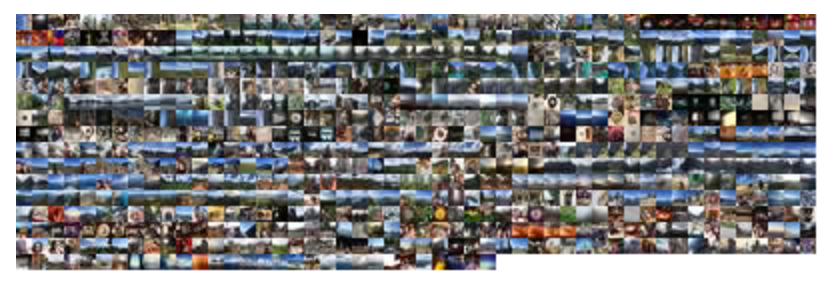
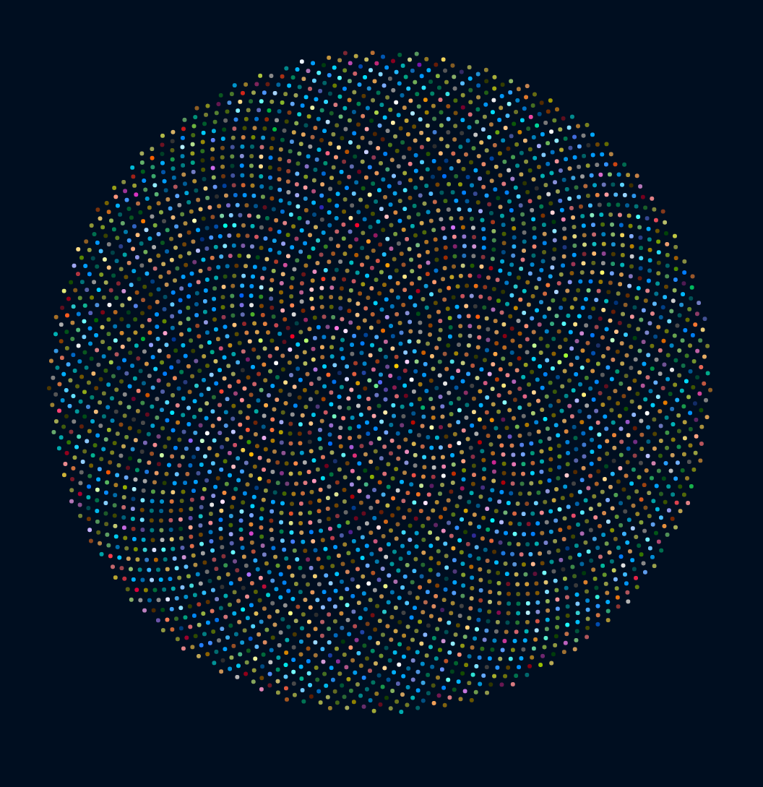

For me, this month was more about the data than the visual. One of my favorite hobbies is travelling, seeing the world. However, I'm not a backpacker, I'm too much of a control freak to not know where I'll be sleeping, but I'm also too introvert to just try and find a place with the locals. Thus, my vacations are more expensive than my typical peer. So I have a feeling that I've been on a decent number of vacations since I was born, but not an excessive amount. Nevertheless, the idea of mapping out my personal vacations, when, where, with whom, was immediately fixed in my mind. But only the vacations where I did not stay at home and I considered it a true vacation (so business trips) would count.
I can't remember all of my vacations of course, so the first thing I did was mobilize my mother. She has the fact memory of an elephant. It was quite fun to discuss my vague memories of when I was younger than ±12 with hers and together we managed to get a good starting list for my youth. I then went to my dad to browse through old vacation photos and match these with the list to see if the years and locations were correct. However, this took quite some time, because my parents never made picture books. So when I asked my dad for the photos, he pulled out a big box from some dusty place that was stuffed with photos, but not in order. So it took me about 4-5 hours to sort them on year and month (the printing month and year was on most of the photo's backs). And then another 4 hours to look through them, find the vacation photos, discuss with my dad where they were taken and then placing each year or occasion in their own folders. However getting the exact dates was too much to ask for. We didn't have digital cameras back then. So I'll have to figure something out in the visual for that. But at least this exercise has now resulted in a nicely sorted box of my childhood photos.
After I was 12, my parents separated and my typical vacation turned around 180 degrees. Instead of lying on a beach in either France or the Netherlands, me and my dad went to discover Europe; Paris, London, Rome. And I started to keep journals from these trips (writing in whatever notebook I could find). So besides the journals and the ticket stubs of the many musea I could now say exactly when I had been away and to where. And with the advent of a digital camera in 2004 I could use the dates saved in the image files to trace back when I had been away and where.
My idea this month was a very simple one. Each year since I've been born would be one row and the weeks in which I've been on vacation would be colored and annotated. Simple as that, just rectangles on rows. However, I wanted to play around with different kinds of annotations to make it easier for myself to see trends; where did I go, with whom, how did we get there, what was the main purpose. Things like that. In the sketch below is my first attempt at creating the annotations, although I expect I'll be trying out some more things once I start building the visual.
However, having made the same mistake before, I knew that what I was sketching above was a poor reflection of reality. There are 52 weeks in a year and typically I'm on vacation during 5 of those weeks. So only 10% of a row is marked. And that will not create a vey nice effect, having so much white space in between. So I started thinking of ways to give the vacation weeks more space and I was reminded of the way time zones run across the Earth, from North to South pole, not at all in a straight line. Maybe I could also squeeze the months in which I wasn't on vacation in that year. Yes, the months wouldn't align perfectly anymore, but I was more interested in seeing trends between vacations, than getting a perfect overview of the periods in which I was away (which is mostly July-August anyway)
I'm not sure if this idea will work, but I'm going to try :)
Working hard on this!
Travel is one of my absolute favorite topics, and since graduating college, I've tried go abroad at least once a year (I moved around a lot as a kid, so I get restless when I'm in the same place for a long period of time, and traveling helps alleviate that). Since I take so many pictures when I'm traveling, I thought it'd be a really fun idea to gather all the photos I took on my trips and visualize them.
So the first thing I did was go through all my photos from the last 4 years (thank you iPhone and Dropbox), and group them into year and airport code:  And the first very noticeable thing is, I just like going to the same places. The second thing I realized was, I take a ****ton of pictures. In my last trip to Japan and China alone, I took more than 1000 pictures in the span of 2.5 weeks.
After I sorted through my images, I played with gm, a node wrapper for GraphicsMagick. My first idea was to reduce the images down to their top 3 colors, and blur and resize them. I experimented with the ~1000 images from my latest trip, and took every 5th picture (because 1000 is just ridiculous):  Unfortunately, it didn't look very good, and also took a few seconds to load.
On my second try, I decided to go through all the images in all the folders, and only resize the images. I also read the images' data, and saved the dates they were taken and the latitude/longtitude of where they were taken, when available.  (Script for getting metadata and resizing images)
This came out to about 800 images, which was just enough to have a noticeable lag in loading all the images, but not enough to do anything particularly exciting with them 😕.
Since using all the images (~4000 photos) felt like it would be way too memory intensive, I decided to try colors instead. I searched around for how to get the primary color(s) of an image, and found get-image-colors - very cool. Unfortunately at this point, I did something minorly stupid: I passed in the fully sized images (~2500x3200pixels, ~3MB) to get the primary image colors. Around 30 minutes and 120 images later, I realized that I could have just passed in my resized images (13KB) to get the colors instead. D'OH!
Once I figured that out and fixed the code to take in the resized images, I had the colors for all ~800 images in the matter of seconds. Here are the ~4000 colors for the ~800 images (each image gave me 5 primary colors):  (Script for getting colors from the resized images)
...
...
{kind=link}
{kind=link}
{kind=link}
{kind=link}
{kind=link}
{kind=link}
{kind=link}
{kind=link}